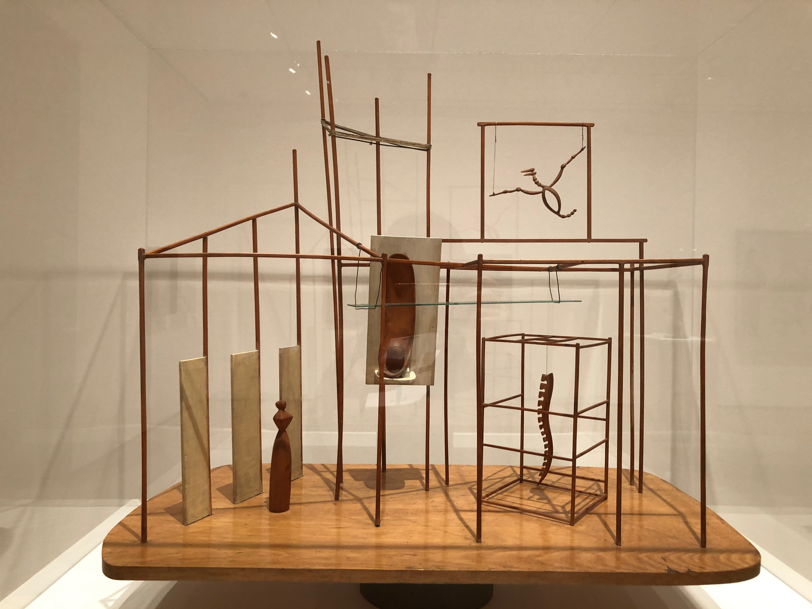

This is about my life. Life doesn't always go you want it to, and we still go on and figure out how to make the best of it. I hope we all don't struggle too much when it feels like our lives are leading us to nowhere. Sometimes we feel stuck; there are clearly things we like, things we want to become But we don't know how to get there. What I know is there's no right answer to life.
I think the point of life is not to get somewhere, and be something, but to get better at what you are doing, and enjoying the journey without having too much fear of the result. What you do is not as important as how you do something. It's about making a difference, doing things in a different perspective, and having a positive impact on the community--small or big--around us. For more work, visit my portfolio.